How Many Blades Does a Small Wind Turbine Need?
For my research project I test a turbine with 2, 3, 4 and 5 blades to find out which one makes the most power.
1. Choosing the right parts
I picked the propeller first, then looked for a motor that matches it. The motor has to be strong enough to hold the propeller, but not so hard to turn that the wind can't spin it. Torque (the twisting force) is a big part of that choice.
The propeller
FMS Propeller, 14 x 8, 4-Blade, 1400mm F4U
It was on the materials list from my professor. I cut it apart and use the blades one at a time.

Finding the motor
I tried a lot of motors before I found one that worked. Here is what happened.
- 1
A basic motor with an RC gearbox
Not usedA gearbox makes a motor spin slower but stronger. I need the opposite, because the wind is what turns my motor. Gears also rub together and waste energy.
I kept one idea: a nut on a threaded shaft to hold the propeller on.
- 2
The 775 motor
Not usedIt has a flat spot on its shaft, which stops the hub from slipping. But it needs about 300 spins per minute just to make 1 volt, and my turbine will probably spin slower than 500. It was also stiff to turn.
- 3
The KidWind generator
Not usedIt is made for classroom turbines and spins easily. But its shaft is only 2 mm thin, and my propeller is big and heavy. The shaft would bend.
- 4
A treadmill motor
Not usedIt has a thick 17 mm shaft and makes lots of voltage. But it costs $313.95 and weighs about 20 pounds. That is way too big for a tabletop project.
- 5
The XD-3420
My motorIt costs $22.99, it is small, and its shaft is 8 mm thick, almost twice as thick as the 775's. The trade-off is that it needs more spins per minute to make voltage. I picked it because a strong shaft matters most for my heavy propeller.
I still need to measure exactly how much voltage it makes. My notes say 508 spins per volt, but the seller's listing points to about 292.


How many spins does it take to make 1 volt?
A shorter bar is better for a slow turbine. The dashed line is 500 spins per minute, about as fast as I expect mine to go.
Striped bars are the two numbers I have not sorted out yet.
What the motor and propeller need to agree on
- The wind has to be able to get the propeller spinning without fighting a stiff motor.
- The motor can't push back so hard that it stops the propeller. That push-back is called load torque.
- The motor has to make enough voltage for my voltmeter to read.
- The shaft has to hold the propeller's weight without bending.
2. The hub and the stand
Two things hold my turbine together. The hub connects the blades to the motor, and the stand holds the motor steady outdoors while the blades spin.
2a. The hub
The hub connects the blades to the motor. I designed it in CAD and went through several versions, talking about the good and bad of each one: shape, size, material, how it attaches to the motor shaft, and how stable it is. I measured every part of my materials so the hub would fit the motor shaft and the blades just right.
What the hub has to do
- Fit the motor shaft and the blades exactly.
- Stay put on the shaft. It can't shift or slip while spinning, and it can't slide off.
- Stay balanced and steady, even with only 2, 3 or 4 blades on it.
- Weigh as little as possible so the propeller spins up more easily.
Choices I have made so far
- Stopping slipping: file a flat spot onto the motor shaft, make the hub's hole match it, and lock it with a set screw.
- Stopping sliding off: a threaded shaft with a nut.
- How I made it: designed in CAD, then 3D printed, because no store-bought part connects these blades to this motor.
- Layout: I made 4 different hubs, one for each blade count (2, 3, 4 and 5). The blade slots are spaced evenly around each hub, 180°, 120°, 90° and 72° apart.
Designing the hub in CAD
I drew every hub in Autodesk Fusion (CAD) before printing it. Each one has a slot for every blade and a hole in the middle for the motor shaft. Here is the hub for each blade count, seen from the blade side and from the back.
2-blade hub two slots, 180° apart
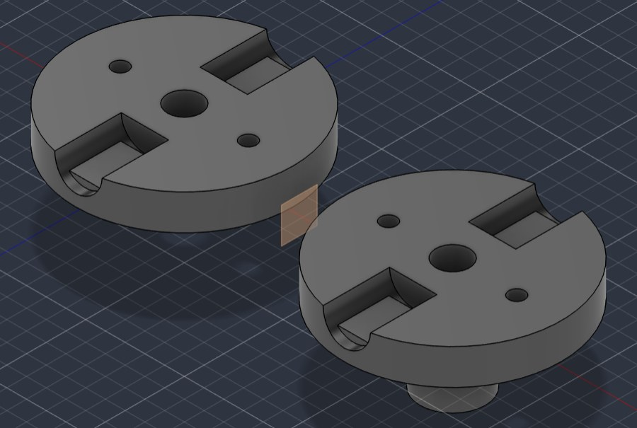
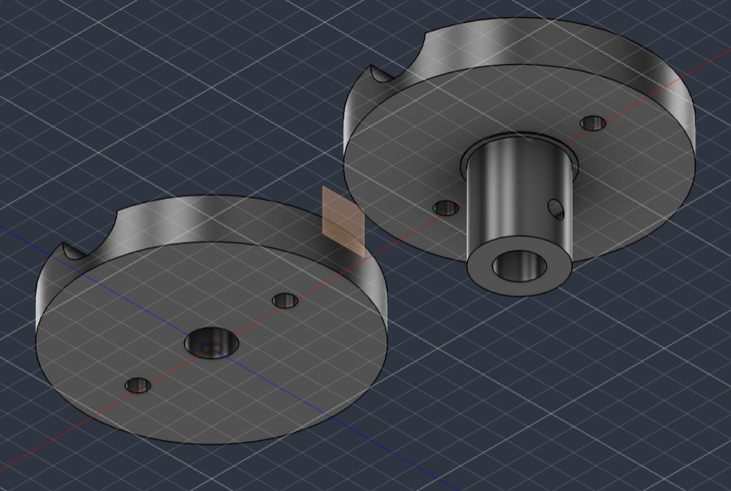
3-blade hub three slots, 120° apart
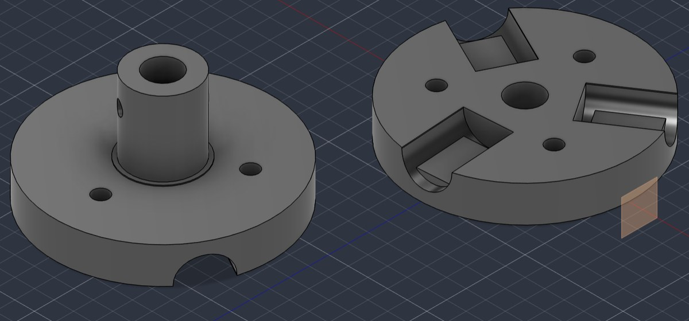
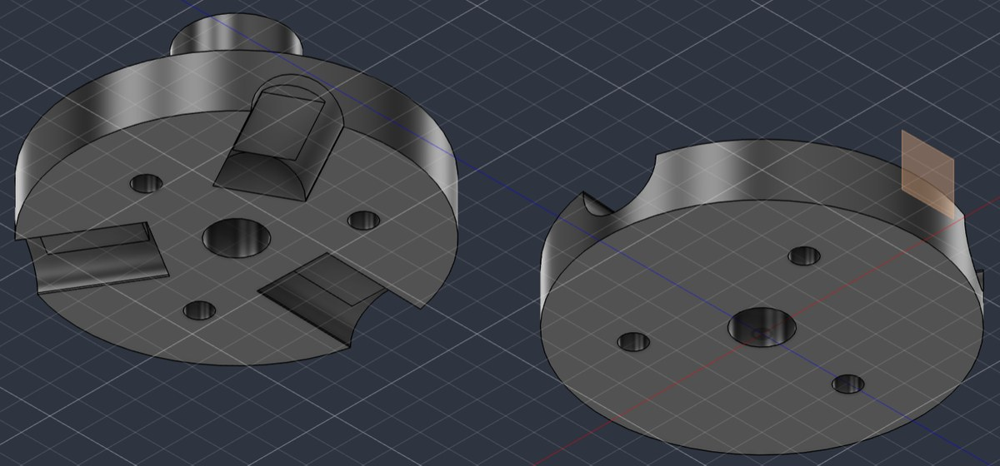
4-blade hub four slots, 90° apart
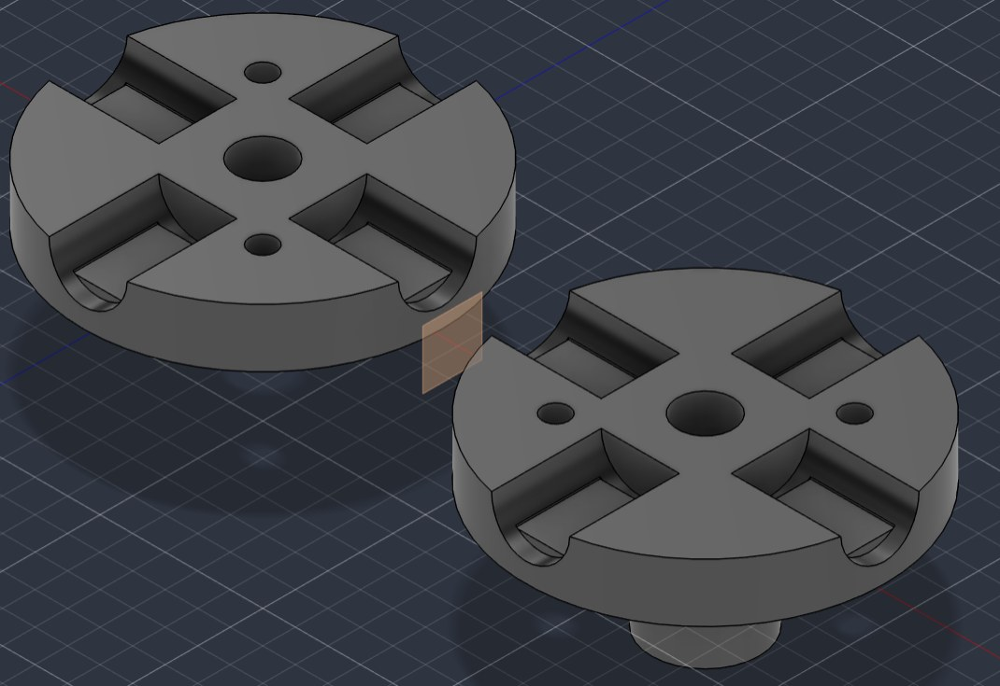
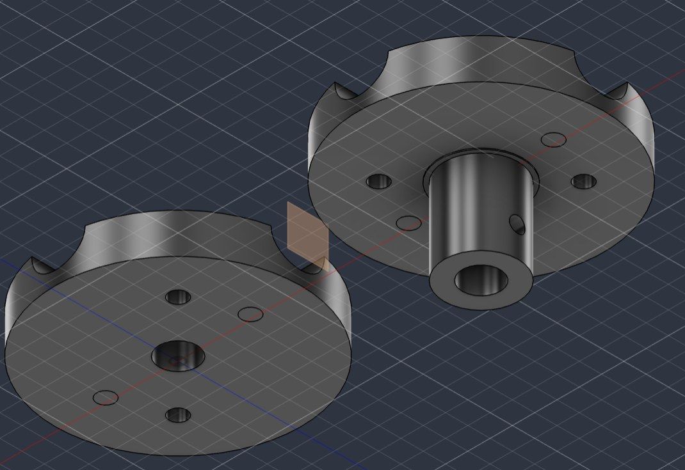
5-blade hub five slots, 72° apart
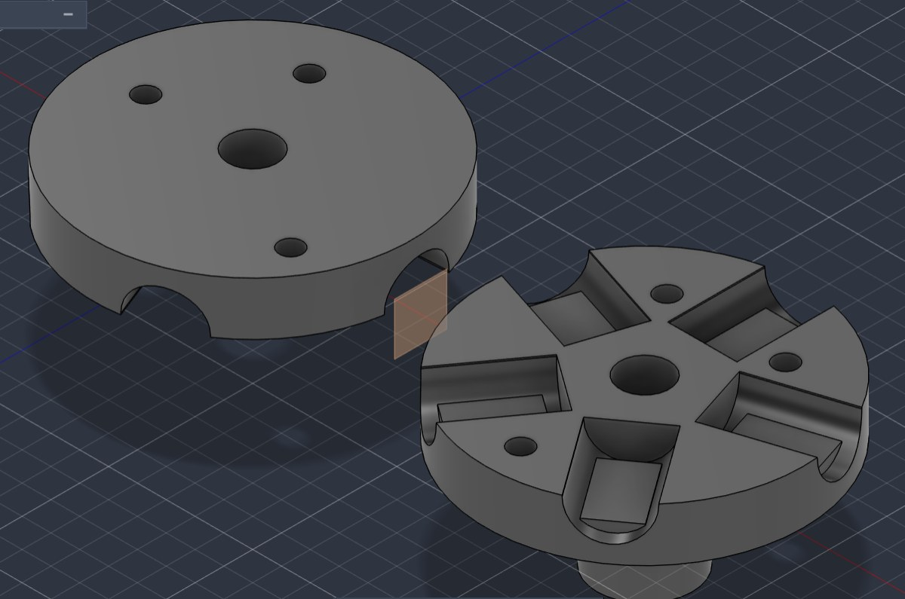
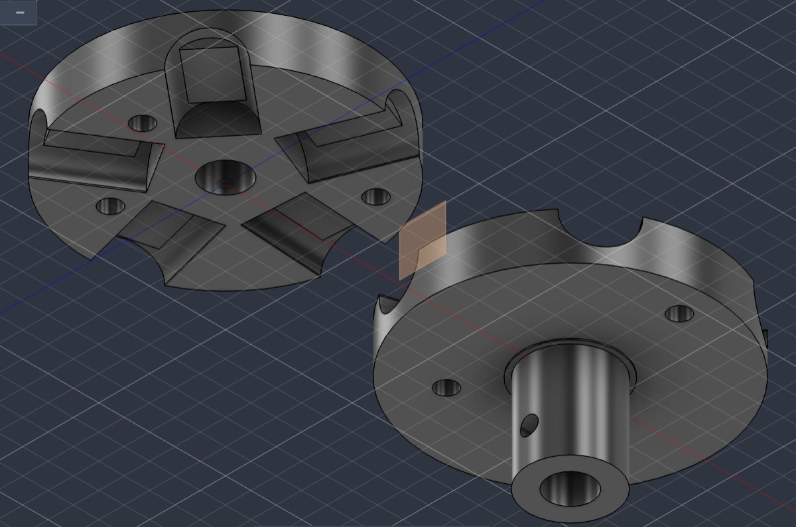
My CAD notes
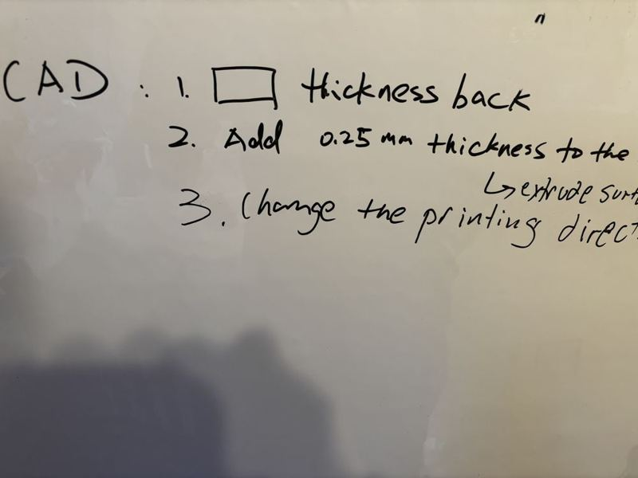
2b. The stand
The motor and propeller need something solid to sit on, so they don't shake or tip over while they spin. Here is how I built the stand.
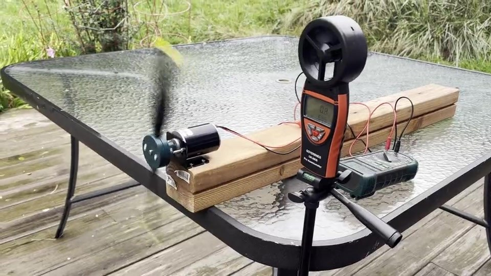
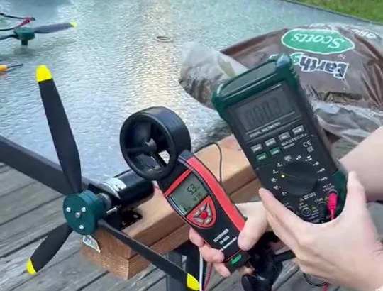
- 1
Drill the holes
I drilled 4 holes into a long piece of wood, at spots I marked first with a black Sharpie.
- 2
Screw on the bracket
The motor came with a bracket. I screwed the bracket into the wood at those holes.
- 3
Mount the motor and propeller
The bracket holds the motor, and the motor holds the propeller, as shown in the photos.
- 4
Hold it down
StableI put the wood on a table outside and held it down with a bag of mulch.
Why a bag of mulch?
I was thinking about how to weigh down the wood so the setup would stay in place. I thought of how people use sandbags to hold heavy structures in place, so I used a bag of mulch I had handy to keep the stand stable.
3. The experiment
What I measure with

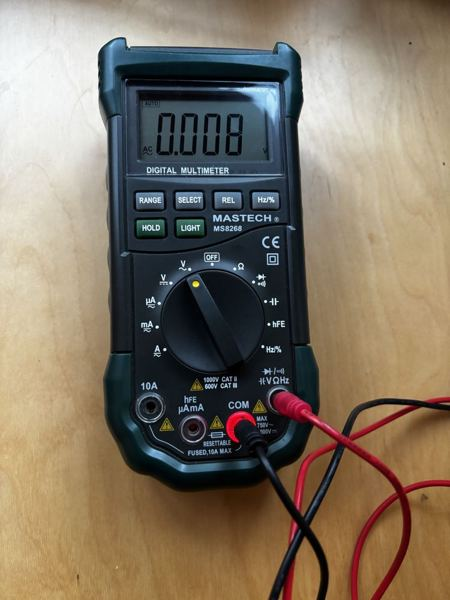
Testing meant trying, failing and fixing. Here are some of my 3D-printed hubs that did not work.

Each failed print taught me something that went into the next hub design.
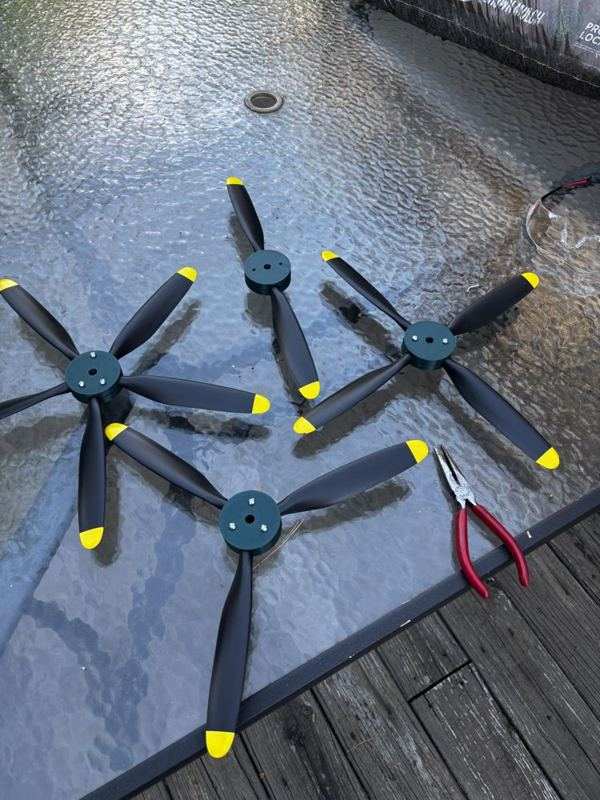
Each rotor uses the same blades and the same style of hub. Only the number of blades changes.
First successful run
This is the first 15 seconds of my first successful run.
4. Blade Optimization Trial Runs
Here are the first 10 seconds of my first run for each blade count.
First run, first 10 seconds
First run, first 10 seconds
First run, first 10 seconds
First run, first 10 seconds
I made the first trial, and I learned from it, so I decided to perform a second run.
What I learned from the first run
- The wind was not steady, so the voltage lagged behind the wind speed. The slowest-wind numbers (around 5 mph) are too high because the rotor was still coasting.
- I read the wind speed and the voltage by eye from the videos, about every 2 seconds. A digit can be off by about 0.1 V or 1 mph, and I left out frames where the display was cut off or showed OL.
- Some spots have only a few readings: 5 blades at 5 mph (2 readings), and 2 and 4 blades at 20 mph (4 readings each).
- The 4- and 5-blade rotors were already spinning when their videos started, so I could not see the wind speed they start at.
- I could not read the RPM from the videos, so the RPM in the tables is an estimate.
5. Results so far
For each blade count I read the wind speed and the voltage from my videos, then averaged the voltage near 5 (or 6), 10, 15 and 20 mph.
First run
Average voltage, with my estimated RPM underneath.
| ~5 mph wind | ~10 mph wind | ~15 mph wind | ~20 mph wind | |
|---|---|---|---|---|
| 2 blades | 0.47 V139 RPM | 2.32 V676 RPM | 3.39 V989 RPM | 4.57 V*1,333 RPM |
| 3 blades | 1.57 V458 RPM | 1.69 V493 RPM | 3.41 V993 RPM | 4.38 V1,278 RPM |
| 4 blades | 2.02 V590 RPM | 2.53 V736 RPM | 5.02 V1,464 RPM | 5.15 V*1,502 RPM |
| 5 blades | 1.69 V*492 RPM | 2.70 V789 RPM | 3.04 V887 RPM | 3.50 V1,020 RPM |
Second run
Same idea. The first column is ~6 mph this time because the rotors only started making voltage around 7 to 9 mph. The 2-blade row was read again from the same video as the first run.
| ~6 mph wind | ~10 mph wind | ~15 mph wind | ~20 mph wind | |
|---|---|---|---|---|
| 2 blades | 0.50 V146 RPM | 2.32 V676 RPM | 3.18 V926 RPM | 4.45 V*1,299 RPM |
| 3 blades | 0.49 V*144 RPM | 0.88 V256 RPM | 2.70 V*788 RPM | 3.03 V885 RPM |
| 4 blades | 0.96 V281 RPM | 1.98 V576 RPM | 3.86 V*1,126 RPM | 5.23 V1,525 RPM |
| 5 blades | 0.78 V228 RPM | 1.72 V502 RPM | 4.11 V*1,200 RPM | 4.30 V1,255 RPM |
* only a few readings in that spot.
How I estimated the RPM
I did not count the spins. I worked them out from the voltage. A motor used as a generator makes more voltage the faster it spins, so:
RPM = voltage × 292
Why 292? It is how many RPM my XD-3420 motor needs to make 1 volt. I got it from the seller's listing, which says the motor spins at 3,500 RPM on 12 V and 7,000 RPM on 24 V. That is 3,500 ÷ 12 = 292 and 7,000 ÷ 24 = 292. For example, 2 volts × 292 = 584 RPM.
This is only an estimate, maybe off by 15 to 20%. My design notes give a different number, about 508 RPM per volt, and I still need to measure the real one. If 508 is right, every RPM in the tables would be about 1.7 times higher. The wind was not steady and I only ran each blade count once, so this is a first look and not a fair blade-count comparison yet.